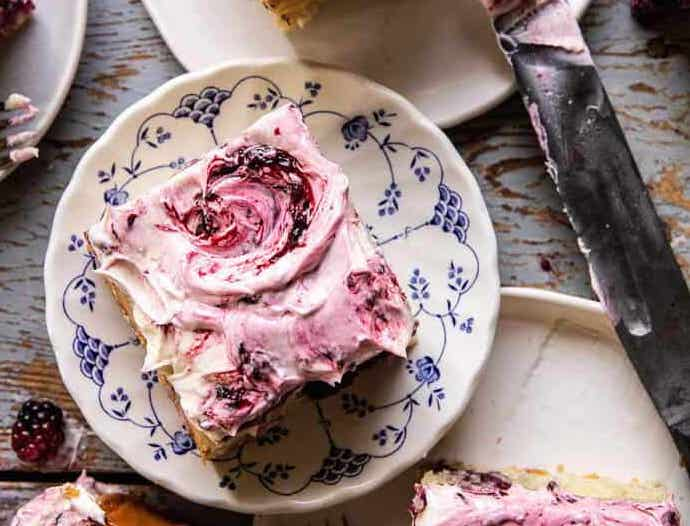

Blackberry Lavender Sheet Cake

The perfect berry-filled cake for any and all occasions.
Light and fluffy vanilla cake swirled with homemade blackberry lavender jam. Then generously frosted a sweet vanilla bean white chocolate buttercream. This cake is nothing short of delicious. Every bite is layered with fresh berries, hints of lavender, and sweet vanilla cake.
Ingredients
Blackberry lavender jam
- 6 cups fresh or frozen blackberries
- 1/2 cup honey
- 1 Tbls lemon juice
- 1-2 Tbls dried lavender
Blackberry cake
- 1 cup melted coconut oil
- 1/2 cup sour cream
- 3 large eggs
- 1 1/2 cups granulated sugar
- 1 Tbls vanilla extract
- 1 cup milk
- 3 cups all purpose flour
- 1/2 tsp baking soda
- 1 1/2 tsp baking powder
- 1 tsp kosher salt
Vanilla white chocolate frosting
- 2 sticks salted butter
- 1 1/2 cups powdered sugar
- 6 ouces white chocolate, melted and cooled
- 1 tsp vanilla extract
Instructions
- To make the jam. Add the blackberries, honey, lemon juice, and lavender to a medium-size pot set over high heat. Bring the mixture to a boil, once boiling use a potato masher or fork to break down and mash the berries. Continue to cook for 5-8 minutes or until the jam has reduced and thickened by 1/3. Remove from the heat and let cool. This should thicken as it cools.
- Preheat oven to 350° F. Line a 9×13 inch baking dish with parchment paper.
- In a large bowl, beat together the coconut oil, sour cream, eggs, sugar, and vanilla. Add the flour, baking soda, baking powder, and salt. Mix until just combined, then slowly beat in the milk until fully combined
- Pour the batter into the prepared pan. Take about 1/2 cup to 3/4 cup of the jam and dollop it by the tablespoon over the cake. Use a knife to lightly swirl the jam around, don't over mix it.
- Bake 30-35 minutes, until the top is just set and no longer wiggly in the center. Remove and let cool completely before frosting.
- To make the frosting. In a large bowl, beat together the butter and powdered sugar until light and fluffy. Add the melted white chocolate and vanilla, beat until combined.
- Spread a thin layer of jam over the cake, then frost the cake all over. Add small spoonfuls of the jam to the frosting and gently swirl the jam into the frosting. Slice, eat and enjoy!